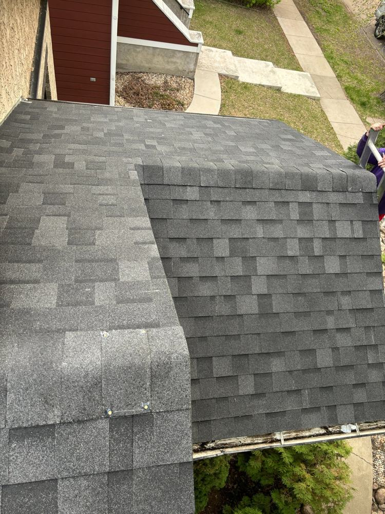

Getting Your Roof Ready for Winter: A Saskatoon Fall Checklist

Saskatoon winters don't forgive a neglected roof. The good news: an hour or two of attention in September or October prevents almost every winter roofing emergency. Here's the checklist, in order of importance.
1. Clean the gutters — properly
This is number one for a reason. Gutters full of leaves freeze into solid ice troughs, and come spring that ice forces meltwater behind the gutter and into your soffits. Clean them late in the fall, after most leaves are down but before the hard freeze — late October in a typical year. While you're up there, run a hose through the downspouts to make sure they drain.
2. Look at your shingles
You don't need to climb up — binoculars from the ground work fine. Look for missing, cracked, or curling shingles, especially after a windy fall. One missing shingle going into winter becomes a leak by spring, because freeze-thaw cycles pry at every exposed edge. Small repairs now are cheap; the same repair in March involves chipping ice first.
3. Check the flashing
Glance at the metal around your chimney and any vents. If caulking looks cracked or dried out, it won't survive the winter's expansion and contraction. A $15 tube of roofing sealant in October beats a ceiling stain in February.
4. Trim back the trees
Branches hanging over the roof dump leaves into gutters all fall, and in winter they get heavy with snow and scrape shingles in the wind. Anything touching or overhanging the roof should be cut back before the snow flies.
5. Peek into the attic
Pop your head up there on a cool day. You're checking three things: is the insulation deep and even (you shouldn't see joists), are the soffit vents clear of insulation, and is there any sign of moisture — staining, frost on nails, or a musty smell. Attic problems become ice dam problems by January.
6. Know your snow load plan
Most Saskatoon roofs handle normal snowfall fine, but drifts against dormers and valleys can pile up deep. If you get big drifts, a roof rake lets you pull snow down safely from the ground. Never use a shovel or an axe on the roof surface itself — that's how shingles get destroyed mid-winter when nobody can properly repair them.
The 15-minute version
Short on time? At minimum: clean gutters, look for missing shingles from the ground, and make sure downspouts point away from the foundation. Those three cover the vast majority of winter damage.